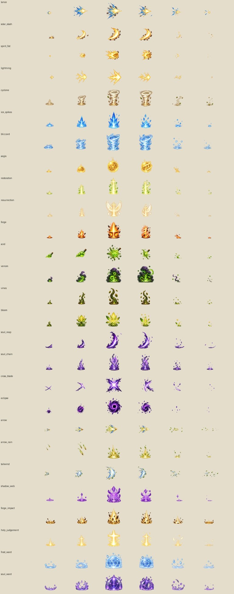

RUNEVALE ONLINE · V54Sprite Sheet เอฟเฟกต์สกิลเข้าชุดเดิม
ภาพแสงเงา ประกาย ควัน และพลังเวทวาดใหม่ สำหรับ72สกิลของ12คลาสขั้นสูง

- 27รูปแบบพลัง ใช้ร่วมกันเมื่อความสามารถเป็นชนิดเดียวกัน
- 8เฟรมวาดจริงต่อชีต ขนาดเฟรม128×128 PNGโปร่งใส ไม่มีเฟรมคั่นจากการบิดภาพ
- แทนภาพเอฟเฟกต์V53แล้ว ความสามารถ ดาเมจ SP และคูลดาวน์เดิม
- คงคลาส33อาชีพ สกิล218สกิล เมือง และพื้นผิวเดิมของV52
- G → stefan-gm → Sprite Sheet เอฟเฟกต์ใหม่V54 เพื่อดูทั้งชีตและตรวจทีละเฟรม
แตกZIP แล้วเปิด index.html
ดาวน์โหลดSprite Sheet PNGแยก72สกิล พร้อมหน้าPreview
ทดสอบสกิลใช้งาน600กรณี ทั้ง5ระดับและ2ฝ่าย · Chromiumและขนาดจอมือถือจำลอง